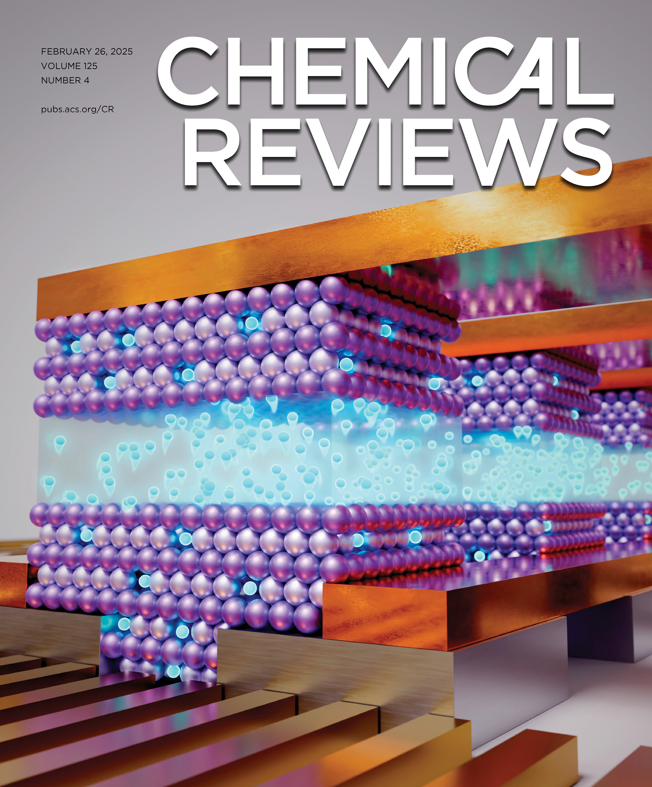
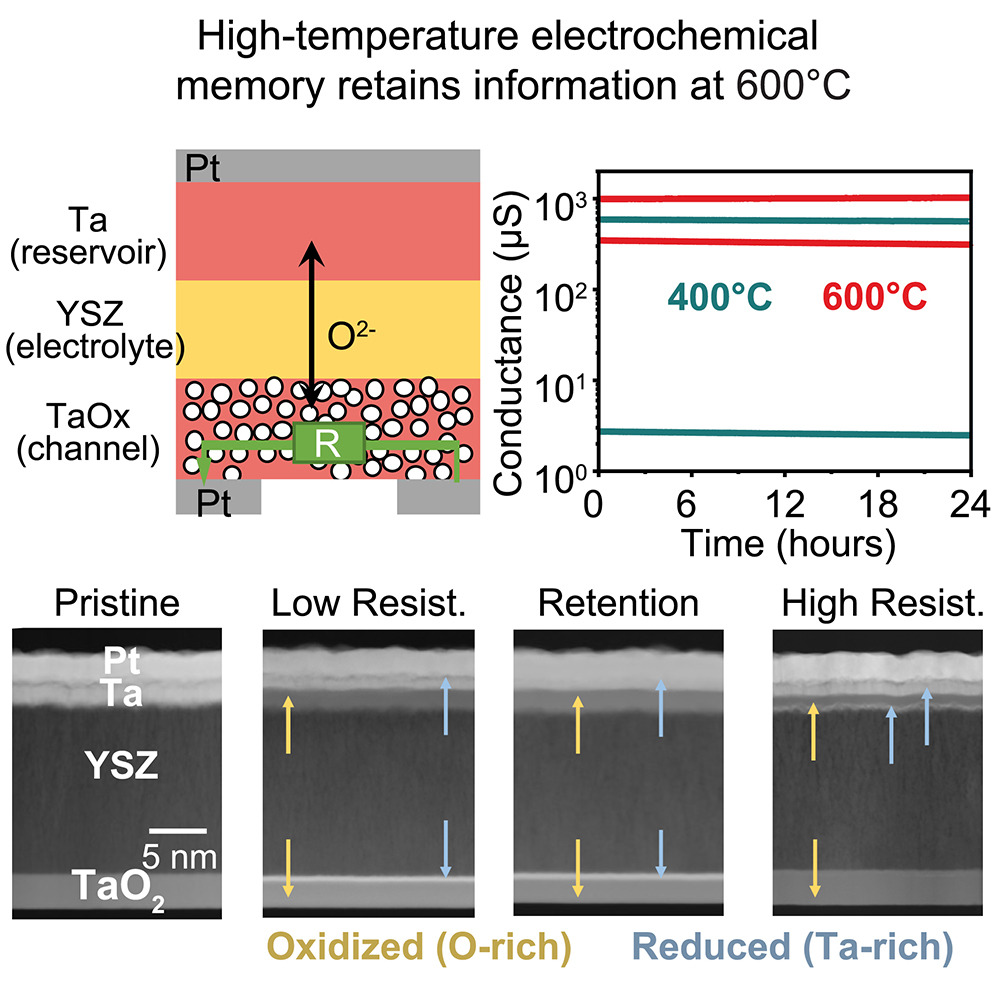
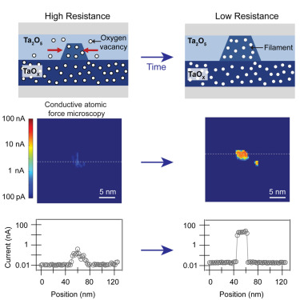
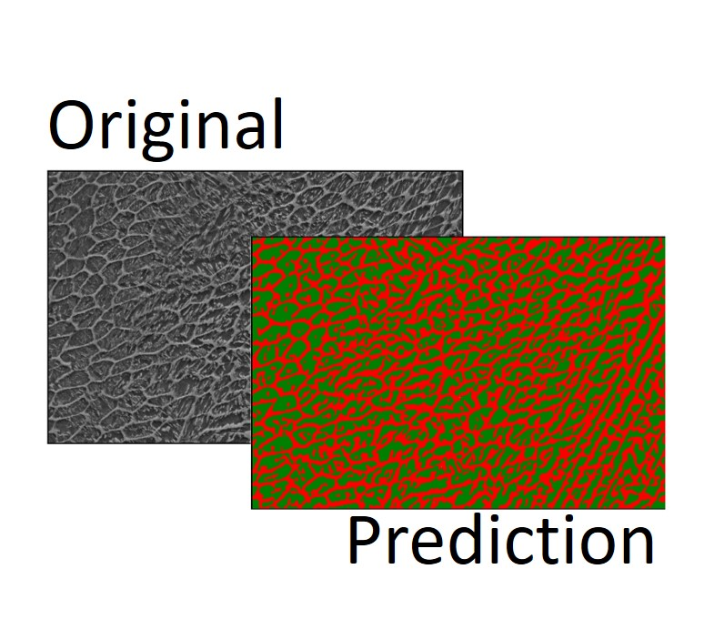
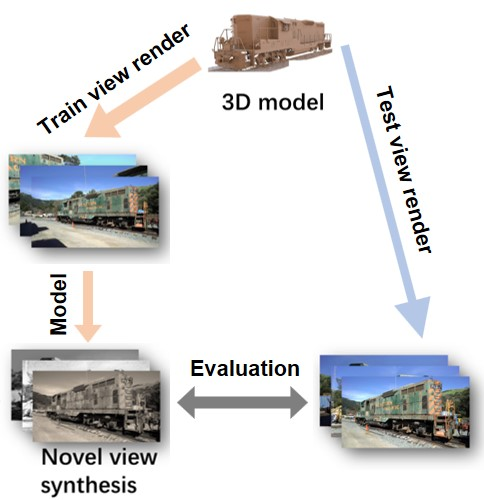

|
Jingxian Li I did my PhD in Materials Science and Master degree in Electrical and Computer Engineering, specializing in Computer Vision, at the University of Michigan, Ann Arbor. Email / CV / LinkedIn / Google Scholar / Github |

|
ResearchMy research passion lies in advancing novel memory and computing paradigms, with a focus on spintronics, ferroelectricity, superconductivity, and electrochemistry. During my PhD, I applied materials science and engineering principles to understand and design resistive memory devices driven by electrochemical processes. Specifically, I investigated oxygen transport dynamics in two-terminal resistive random-access memory (RRAM) and developed high-temperature three-terminal electrochemical random-access memory (ECRAM). |
|

|
(Review) Electrochemical random-access memory: progress, perspectives, and opportunities
A Alec Talin*, Jordan Meyer, Jingxian Li, Mantao Huang, Miranda Schwacke, Heejung W Chung, Longlong Xu, Elliot J Fuller, Yiyang Li*, Bilge Yildiz* Chemical Reviews, 125 (4), 1962-2008, 2025 In this review, we discuss the history, basic concepts, recent progress, as well as the challenges and opportunities for different types of electrochemical random access memory (ECRAM), broadly grouped by their primary mobile ionic charge carrier, including Li, protons, and oxygen vacancies. |
|

|
Nonvolatile electrochemical memory at 600°C enabled by composition phase separation
Jingxian Li*, Andrew J Jalbert, Sangyong Lee, Leah S Simakas, Noah J Geisler, Virgil J Watkins, Laszlo A Cline, Elliot J Fuller, A Alec Talin, Yiyang Li* Device, 3 (3), 100623, 2025 We present a solid-state memory device that can operate and store information at temperatures as high as 600 °C. Rather than relying on the motion of electrons, this device stores information through the electrochemical migration of oxygen ions in transition metal oxides, a process that resembles that of solid oxide fuel cells and batteries. |
|

|
Thermodynamic origin of nonvolatility in resistive memory
Jingxian Li, Anirudh Appachar, Sabrina L. Peczonczyk, Elisa T. Harrison, Brianna Roest, Anton V. Ievlev, Ryan Hood, Sangmin Yoo, Kai Sun, A. Alec Talin, Wei D. Lu, Suhas Kumar, Wenhao Sun, Yiyang Li* Matter, 7 (11), 3970-3993, 2024 We reveal that the formation and stability of conductive filaments crucially depend on the stability of the amorphous oxygen-rich and oxygen-poor compounds, which undergo composition phase separation. |

|
Electrochemical and thermodynamic processes of metal nanoclusters enabled biorealistic synapses and leaky-integrate-and-fire neurons
Jingxian Li, Yuchao Yang*, Minghui Yin, Xinhao Sun, Lidong Li*, and Ru Huang* Mater. Horiz., 7, 71-81, 2020 Our study employs the electrochemical migration and thermodynamic relaxation of silver nanoclusters within dielectric materials to accurately mimic the dynamic processes of synapses and neurons in biological systems. |

|
Tuning analog resistive switching and plasticity in bilayer transition metal oxide based memristive synapses
Jingxian Li, Qingxi Duan, Teng Zhang, Minghui Yin, Xinhao Sun, Yimao Cai, Lidong Li*, Yuchao Yang*, and Ru Huang* RSC Adv., 7, 43132-43140, 2017 We report a systematic study on the analog switching of bilayer oxide based memristive synapses and show that transition metal oxides with rich intermediate phases, are able to provide larger number of conductance states compared with oxides with few intermediate phases. |
|
|
Design, synthesis and characterization of a new blue phosphorescent Ir complex
Chuang Yao†, Jingxian Li†, Jinshan Wang, Xinjun Xu*, Ronghua Liu, and Lidong Li* J. Mater. Chem. C, 3, 8675-8683, 2015 We synthesized a novel phosphorescent dye, Cz-C8-FIrpic, which effectively inhibits the phase aggregation of FIrpic units. Devices incorporating Cz-C8-FIrpic exhibited approximately a 15% enhancement in performance compared to the control devices reliant on FIrpic. |
Side Projects |
|

|
Automatic Phase Characterization of Additively Manufactured Materials
We develop two learning based computer vision systems, based of the Unet++ and Segment Anything models, to automatically identify and label the phase fractions of common constituents inside steels using semantic segmentation approaches. |
|

|
From 3D Gaussian Splatting to 3D Generative Model
We explore the challenge of generating 3D models from single or sparse-view 2D images that use advanced neural architectures and techniques like 3D Gaussian splatting for detailed model generation. We provide a series of evaluations that demonstrate significant advances in generative models that bridge the gap between 2D inputs and 3D outputs. |
Award |
|
Website template from Jon Barron
|